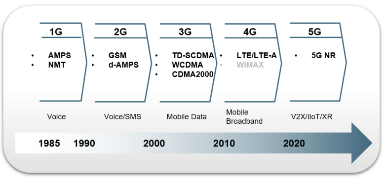
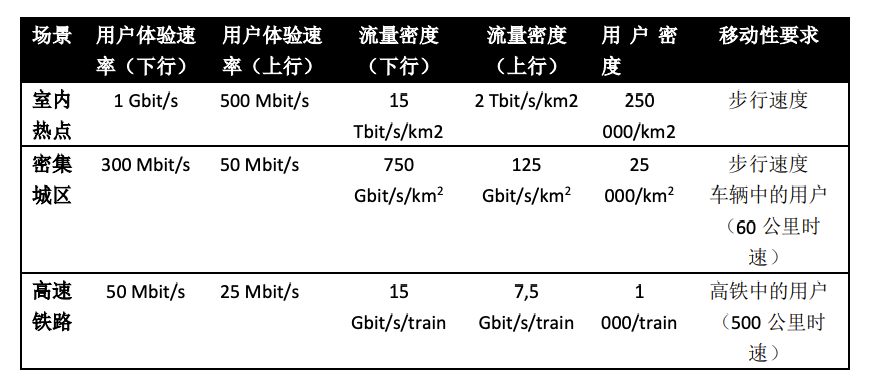

常用¶

5G 技术于 2016 年正式更名为 5G 新无线（New Radio），以国际电联 ITU 定义的三大场景:
1. 增强移动宽带 eMBB、
2. 大连接 mMTC
3. 超低时延高可靠 URLLC
作为设计目标
eMBB-增强移动宽带¶
增强移动宽带场景 eMBB 较 4G 技术进一步增强了数据速率，并提出了更丰富的指标来综合衡量增强移动宽带的性能。
例如除了峰值速率的要求，还有区分场景的速率要求（共 9 类场景）:
1. 用户体验速率要求，
2. 流量密度要求，
3. 用户密度要求，
4. 移动性要求等等。
典型业务需求:

URLLC-低时延高可靠场景¶
低时延高可靠场景 URLLC 指那些要求具备超低时延和超高可靠性的业务，例如:
1. 工业控制，
2. 车联网业务，
3. 高铁通信等等。
其可靠性要求可高达 99.9999%，时延要求高达 1ms
运动控制:
传统运动控制的特点是对通信系统的延迟、可靠性和可用性有很高的要求。
支持运动控制的系统通常部署在局部地区（例如厂房），
但也可能部署在更广泛的地区（例如城市范围的智能电网），
出于安全和数据隐私的考虑，访问可能仅限于授权用户，并且与其他移动用户使用的网络或网络资源隔离。
远程控制:
远程控制的特点是由人或计算机远程操作终端。
例如，远程驾驶允许远程驾驶员或 V2X 应用程序在没有驾驶员的情况下
操作远程车辆或远程车辆处于危险环境中例如矿山
高铁通信:
铁路通信（如铁路、轨道交通）使用基于 3GPP 的移动通信（如GSM-R）已经有一段时间了，而列车上仍有司机。
下一步的发展将是提供完全自动化的列车操作，
这需要高度可靠的通信，中等延迟，但支持的移动速度需要高达 500 公里/小时
mMTC-大连接场景¶
大连接场景 mMTC 主要是指那些业务量不大，但终端数量较大的场景。例如:
物联网场景，智能穿戴场景，传感网络场景等。
物联网场景，一般具有较大的终端数量和非实时的业务，需要考虑安全和配置的特殊性。
智能穿戴场景，包括不同种类的终端和传感器，较为关注终端的低复杂度和续航时间。
传感网络场景，一般应用在智慧城市之中，具有非常大的终端密度，并且具有种类繁多的业务。
这种场景下也需要终端具有低复杂度和较长的续航时间。
对于大连接场景来说，连接数密度要求达到每平方公里百万级的连接数。
mMTC 定义了四个关键指标:
- 在最大 MCL 达到 164dB 时，传输速率大于 160bps；
- 接入容量达到 100 万/平方公里，带宽限制在 50MHz；
- 在最大 MCL 达到 164dB 时，时延小于 10s；
- 在最大 MCL 达到 164dB 时，电池寿命大于 10 年；
MCL: Maximum Coupling Loss(最大耦合损耗), 指从基站天线端口到终端天线端口的路径损耗
面向垂直行业应用技术¶
25 种 V2X 服务场景主要包括以下四类:
车辆“队列化”
扩展感知
先进驾驶
远程驾驶
车辆“队列化”:
使车辆能够动态地组成一个车队一起行进。
队列中的所有车辆能够从领队车辆获得信息来维护队列。
这些信息能使车辆在一种协调的方式下以更小的车距，向同一方向一起行驶。
扩展感知:
能够在车辆、路边设备单元、行人设备和 V2X 应用服务器之间
交换传感器收集的原始或处理过的数据或实时视频图像。
车辆可以获得超出其自身传感器所能检测到的周围环境信息，
并对自身的行车环境有更广泛和整体的认知。
高数据速率是其关键特性之一。
先进驾驶:
可实现半自动或全自动驾驶。
每辆车辆和路边设备单元都将其从本地传感器获取的感知数据与邻近车辆共享，
从而使车辆能够同步和协调其轨迹或动向。
每一辆车也会与邻近车辆共享其形式意图。
远程驾驶:
允许远程司机或 V2X 应用程序，
为那些不能自主驾驶的乘客或位于危险环境中的远程车辆，操作远程车辆。
此时行驶中的变化有限且路线可预测的，比如公共交通。
远程驾驶可以使用基于云计算的驾驶。
高可靠性和低延迟是主要要求。
不同于 4G LTE V2X 在物理层仅支持了 broadcast 的通信，5G NR V2X 在物理层设计中支持了 broadcast，unicast 和 groupcast 的通信，并且在 unicast 和groupcast 中，引入了 HARQ-based 的重传机制，为了达到更高的传输速率，也支持了更高的调制编码方式以及 CSI 反馈机制
5G 业务的应用发展状况¶
5G 在垂直行业中的应用场景¶
智能移动视频加速：基于 MEC 的智能视频加速可以改善基于移动蜂窝网 络的内容分发效率低下的情况，在 MEC 服务器内部署无线分析应用，为 视频服务器提供无线下行接口的实时吞吐量指标，以助力视频服务器作出 更为合理的 TCP（Transmission Control Protocol）拥塞控制决策，并确保应 用层编码能与无线下行链路的预估容量相匹配。
监控视频流分析：运用 MEC 技术，就可以无需再在摄像头本地进行视频 处理，从而降低成本（尤其是当需要部署大量摄像头时），并且无需回传 大量的监控视频数据至应用服务器（需流经移动核心网）。
AR（增强现实）：由于 AR 信息（用户位置及摄像头视角）是高度本地化 的，对这些信息的实时处理最好是在本地（边缘计算服务器）进行而不是 在云端集中进行，从而最大程度地减小 AR 延迟/时延、提高数据处理的精 度。
企业专网：当运营商的小基站和移动边缘计算平台集成起来，就可在小基 站和企业 WLAN（无线局域网）之间提供“无缝”的服务，为企业办公提供 更好的业务体验同时为移动网络运营商带来新的市场机遇。这需要企业 IT 部门与移动通信基础网络运营商在业务分发策略方面密切协作，对在网用 户进行负载均衡，并对企业的各级员工和客户进行接入控制（为不同等级 的用户提供差异化的服务）、对员工自带设备进行高效管理等。
车联网：随着应用的发展，车联网的数据传送量将会不断增加，其对于延 迟/时延的需求也越来越大。将移动边缘计算技术应用于车联网之后，可 以把车联网云“下沉”至高度分布式部署的移动通信基站，从而可以就近提 供车联网功能，并减小业务的延迟
6G 展望¶
与前几代相比，6G 将是一个革命性的系统，将彻底改变无线通信从“万物互联”到“智能互联”的演变:
支持潜在的新型应用，例如，
沉浸式 XR 和移动全息应用；
以及更丰富的场景，例如远程医疗和自动驾驶。
6G 系统需要满足如下的关键性能需求:
1. 为满足对超高速流媒体应用的支持，
需满足高达 1 Tbps 的峰值数据速率和 1Gbps 的用户体验速率；
2. 为满足对时延敏感应用的支持，
需要满足小于 100μs 的空口时延和小于1ms 的端到端时延；
3. 为满足远程手术和工业自动化等极高可靠性应用的需求，
误块率要求不低于 10^-7；
4. 为满足超覆盖物联网的海量链接需求，
连接密度要求不低于 10^7/km2；
5. 考虑到环境的可持续发展，6G 系统要求有更高的能量效率
例如，与 5G网络相比，6G 网络的能量效率至少提高 2 倍。